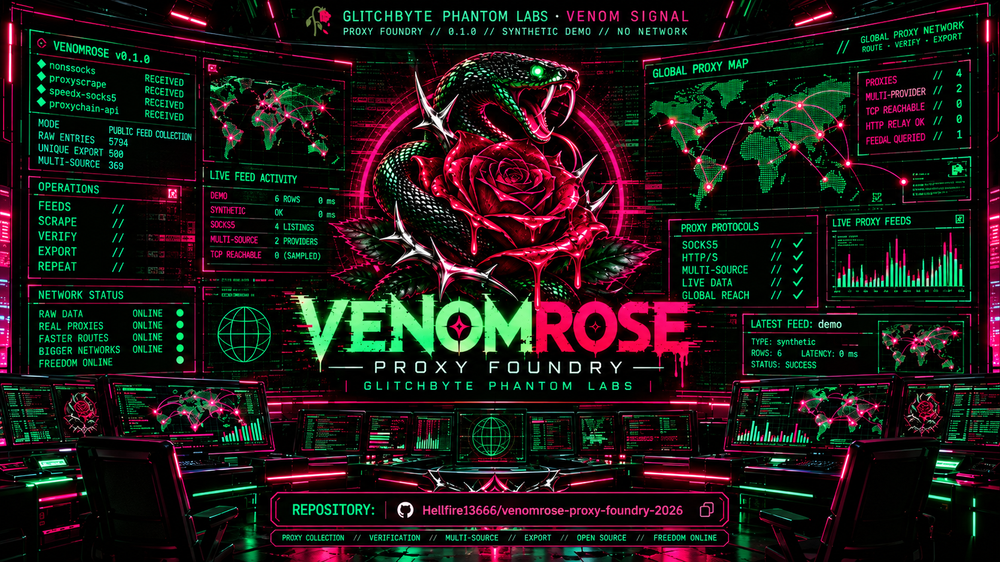

🥀 VENOMROSE // PROXY FOUNDRY v0.1.1
GLITCHBYTE PHANTOM LABS · VISUAL EDITION · PYTHON 3 / UBUNTU
Artwork panels contain illustrative sample values. They do not show live scan results.
Launch the Foundry
Inside the extracted project folder, open a terminal:
./RUN_TESTS.sh
./OPEN_VENOMROSE.sh --demo
./OPEN_REPORT.sh
For a public-feed collection use ./OPEN_VENOMROSE.sh --live --timeout 20.
Repository
Hellfire13666/venomrose-proxy-foundry-2026
Prepared repository address. It will open once the project has been published to GitHub.
Report Vault
Reports are written to ~/VenomRoseReports in JSON, CSV, TXT and portable illustrated HTML. Published proxy listings are not equivalent to verified relays.